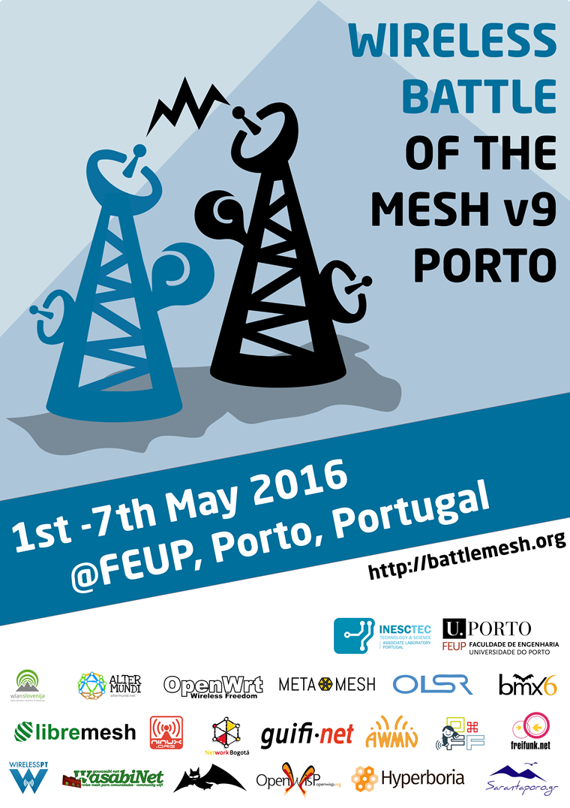

OpenWISP Endorses the Battlemesh v9

The "Wireless Battle of the Mesh" is an event that aims to bring together people from across the globe
to test the performance of different routing protocols for ad-hoc networks, like Babel, B.A.T.M.A.N, BMX, OLSR, and 802.11s.
Many developers and community networkers will join the event to hack, test, discuss, explain and learn.
If you are interested in dynamic routing protocols or wireless community networks you can't miss this event!
The battlemesh is free of charge and open for all, every year we strive to keep participation costs low by negotiating deals for accommodation and food.
This year the event will take place from Sunday 1st to Saturday 7th of May 2016 in Porto, Portugal. The event is locally organized by INESC TEC, Porto, Portugal. INESC TEC stands for Institute for Systems and Computer Engineering,
Technology and Science and is a private non-profit research & development institute located on the campus of the Faculty of Engineering of the University of Porto (Portugal).
OpenWISP endorses and supports the Battle of the Mesh v9 because of the efforts made by its
community to improve OpenWRT, NetJSON
and modern dynamic routing protocols.
OpenWISP will support the event by sending two of our core developers to the event to help
setting up the testbed, documenting results and running tests.
Many other communities endorse and support the Wireless Battle of The Mesh v9 and an up
to date list of the
endorsers of the Battlemesh v9 can be found at the main Battlemesh website.
If you are interested in coming join the event's Mailing List to stay up to date with the latest news.